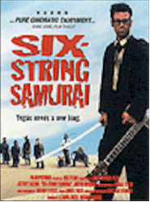

Contents | Features | Reviews | Books | Archives | Store |
 |
|
| Movie Credits | Buy It! |
Six-String Samurai
Review by Sean Axmaker
Posted 18 September 1998
|  | Directed by Lance Mungia Starring
Jeffrey Falcon, Justin McGuire, Written by Jeffrey Falcon and Lance Mungia |
It’s The Road Warrior with a rock ’n’ roll beat, Buddy Holly doing his best Toshiro Mifune, a Sergio Leone gang picture set in a fantasy future, directed with the flash and panache of a Hong Kong action flick and the sleek style of a samurai film. Lance Mungia’s high energy genre soup is a hoot, a low budget indie action film that embraces its limitations with a spare grunge-chic look spiced with flashy visuals, jazzy editing, and plenty of punk attitude.
The setting is a parallel post-apocalyptic future. Those damn Russkies turned the cold war into a nuclear winter when they dropped the bomb (or, in 1950s parlance, "The Bomb") on the US in 1957 and took what was left. Las Vegas became the last bastion of freedom and the King of Rock ’n’ Roll himself was crowned King of America. Now it’s 1997. America is a desolate desert wasteland. The King is dead and the pretenders to the throne are called forth to vie for the mantle in Lost Vegas, an Oz for these desperate times. Among them is our hero, a sword wielding, guitar strumming, rockabilly samurai known as Buddy (Jeffrey Falcon), who rises out of a cornfield like a Kurosawa hero to save mother and child attacked by a roving band of marauders. Only this hero is outfitted in a grimy suit (with black tie, natch) and horn-rimmed glasses, like another Buddy (Holly) by way another Elvis (Costello), after being dragged across the desert.
The plot is negligible. The orphaned survivor of the opening battle scene tags along behind the taciturn warrior, eventually becoming his grunting, inarticulate sidekick. Loner Buddy wants nothing to do with the waif. "I got a gig in Vegas and the wasteland ain’t no place for kids," he hisses in his best Clint Eastwood rasp, but can’t help getting attached to the tyke and after saving his ass some half a dozen times he relents and adopts him. The two proceed to take on an unending series of comers: Russian rock hitmen (soundtrack musicians The Red Elvises), bounty hunters sporting bowling shirts and wielding knives hidden in bowling pins, a gang of grunting hillbillies blown back to stone age but for their sputtering pick-up, a post-nuclear family of cannibals out of a fantasy episode of "Father Knows Best" as directed by Tobe Hooper, and radiation suited marauders who emerge from the roadside windmill farms. And then there’s Death himself, a Darth Vadar-esque wanderer sporting a guitar instead of a scythe and looking more like a malevolent scarecrow than the traditionally hooded figure, tracking Buddy across the lonely desert.
You know that Buddy has a date with Death sooner or later, but until then he’s a lean, mean, dustily unclean fighting machine, a desert warrior with guitar and sword. Falcon’s impressive moves and slick choreography (he’s a veteran of numerous Asian productions and a medal winning Kung-Fu Champion) really make this picture work -- the guy can swing a sword. But he doesn’t take it too seriously either, and director Mungia strikes the right balance between deadpan humor and kickass Kung-Fu fighting.
Mungia and Falcon have scripted this dusty desert fable from a myriad of movie references-cum-contemporary cultural myths, an iconography instantly recognizable to modern movie audiences. (In a terrific example of mix, match and spoof, a slow speed chase with barely mobile cars, the kid working the pedals with blocks of wood tied to his feet while an unconcerned Buddy strums dreamily in the passenger seat, combines 1950s juvie street races, Mad Max and O.J. Simpson with a screwy twist.)
But more than that, they’ve twisted them into their own goofy idea what society might have mutated into if American society ended in 1957 but attitude kept going strong. Married to punkified Star Wars plot by way of The Road Warrior, Messrs. Mungia and Falcon have successfully reworked the same bedrock myths (fathers and sons, journeys, destiny, yadda yadda yadda) with unassuming giddiness and funked up style, served up so effortlessly that you never think about these mythic foundations through this grunge journey. Backed with a boisterous rockabilly soundtrack and shot in burning color by very talented DP Kristian Bernier (watch for this guy to make his mark), this Slamdance Award Winner isn’t exactly an original, but it’s visceral, comic book style recalls the heady sense of invention and energy of The Road Warrior and The Terminator. Every once in a while someone has to remind us that going to the movies is fun.
Contents | Features | Reviews | Books | Archives | Store
Copyright © 1999 by Nitrate Productions, Inc. All Rights Reserved.